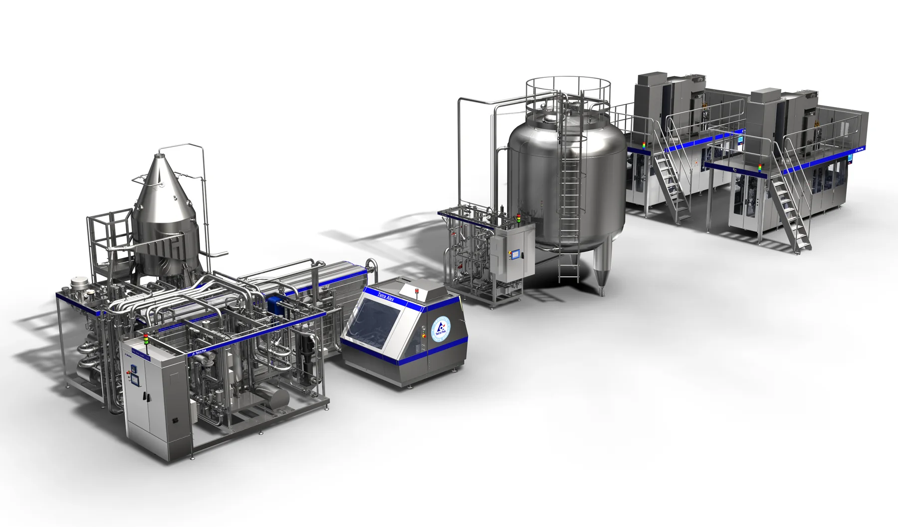
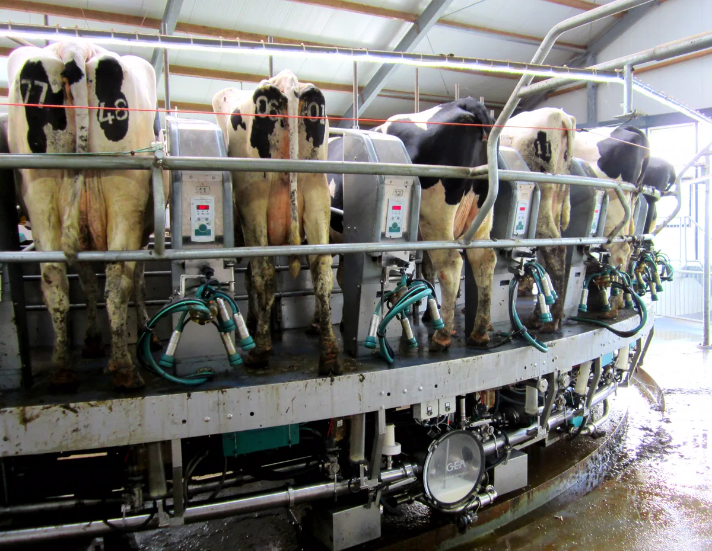
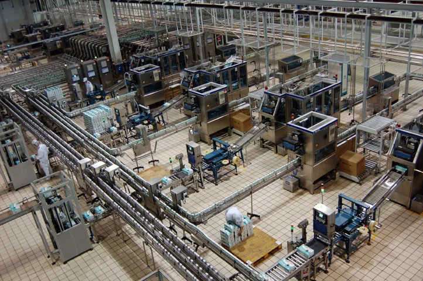

Натуральное молоко «Завозик»
«Завозик» — молоко, кефир, йогурты и сыры. Ближе к хорошему.
Смотреть молокоКто мы?
Мы делаем то, что сами хотим видеть на своём столе.
Натуральное молоко ближе к хорошему
«Завозик» — молочная марка. На одной полке у нас то, что хочется каждый день: молоко, кефир, творог и сметана. И то, что хочется попробовать: йогурты с неожиданными вкусами и сыры с характером.
-
Без консервантов
Так написано на наших упаковках. Вкус держится на молоке и честных добавках: ягодах, специях, мёде.
-
Из натурального молока
В основе каждого продукта — молоко: от бутылки на каждый день до сыров к праздничному столу.
-
Вкус с характером
Брусника с чабрецом, какао с морской солью, сыр с кофейной корочкой. Классику любим, но и удивлять не боимся.
Производство
Как молоко становится молоком
Между коровой и пачкой в холодильнике — ферма, молоковоз, лаборатория и целый цех: сепараторы, пастеризатор, гомогенизатор, фасовочные автоматы. Так этот путь устроен на современном молочном производстве — по шагам.
Фотографии — иллюстрации промышленного процесса со свободными лицензиями (Wikimedia Commons), авторы указаны под снимками.
-
01
Ферма
Коров доят на доильной карусели. Молоко по закрытым трубам сразу уходит в танк-охладитель и за пару часов остывает до холодильной температуры.
-
02
Приёмка
Молоковоз-цистерна привозит молоко на завод. Прежде чем его примут, лаборатория проверяет пробу: кислотность, жирность, белок, чистоту.
-
03
Очистка и жирность
Сепаратор очищает молоко и отделяет сливки. Потом их возвращают ровно столько, сколько нужно продукту: 2,5 % для питьевого, 3,2 % для топлёного.
-
04
Пастеризация
Молоко быстро нагревают и сразу охлаждают: вредные микробы погибают, а вкус остаётся молочным. Топлёное молоко, наоборот, долго томят — отсюда кремовый цвет.
-
05
Гомогенизация
Под высоким давлением жировые шарики дробят на мельчайшие. Сливки больше не всплывают, и вкус ровный от первого глотка до последнего.
-
06
Закваска
Для кефира, йогуртов, сметаны и творога в молоко вносят закваску — живые культуры, для сыров ещё и фермент. Дальше решает время: у йогурта это часы, у сыра — недели.
-
07
Фасовка
Автоматы стерилизуют упаковку, наливают продукт и запечатывают пачку. Молоко проходит весь путь по закрытым трубам — руками его не касаются.
-
08
Холод
Коробки уезжают в холодильную камеру, а оттуда — в доставку. Молоку нужен холод на каждом шаге: это называют холодовой цепью.

- Нагрев и охлаждение. Трубы и теплообменники: здесь молоко пастеризуют — греют и тут же охлаждают.
- Гомогенизатор. Насос высокого давления, который дробит жировые шарики.
- Стерильный танк. Готовое молоко ждёт фасовки без доступа воздуха.
- Фасовочные автоматы. Формируют пачку, наливают, запечатывают.
Линия обработки молока: 3D-модель наша, по мотивам иллюстрации Tetra Pak (CC BY-SA 2.0, Wikimedia Commons) — она же показана, если 3D недоступно.


Молоко
Молоко, кефир, йогурты и напитки
16 продуктов: восемь на каждый день и восемь с характером — от гречки с мёдом до облепихи.
Наведите курсор на фото — под лупой видно, из чего продукт состоит: лактоза, молочный жир, живые культуры и то, что даёт ему вкус и цвет.
Цены указаны для примера. Скидка товаров недели уже учтена в цене.
Каждый день
С характером
Сыры
От простого сыра до бурраты
9 сыров: полутвёрдый на каждый день, сливочный, буррата и сыры с ягодами, специями и кофе.
Под лупой у каждого сыра свой состав: сетка казеина, соль, ароматы копчёной паприки, кофе, клубники и базилика.
Цены указаны для примера.
Классика
С характером
Доставка
Как молоко доезжает до вас
Молоко — продукт нежный: ему важны холод, аккуратность и время в пути. Поэтому доставка для нас — такой же шаг производства, как пастеризация или фасовка, последний перед вашим завтраком.
-
В холоде
Молочные продукты везут охлаждёнными — холодовая цепь не должна прерываться от камеры завода до вашего холодильника.
-
Бережно
Бутылки, банки и пачки едут в коробках, чтобы доехать целыми, а буррата — не помятой.
-
Дома
Уберите покупки в холодильник сразу. Срок годности и как хранить продукт после вскрытия — на каждой упаковке.
-
Условия
Зоны, сроки и стоимость доставки появятся вместе с оформлением заказа. Пока на сайте можно собрать корзину и посчитать сумму.